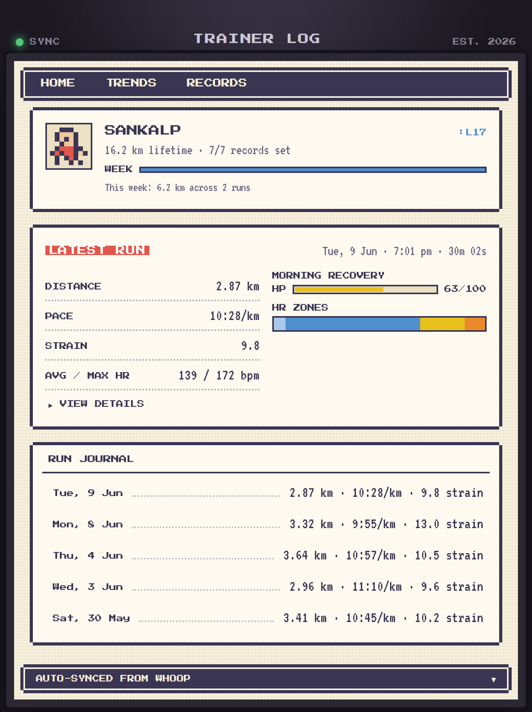
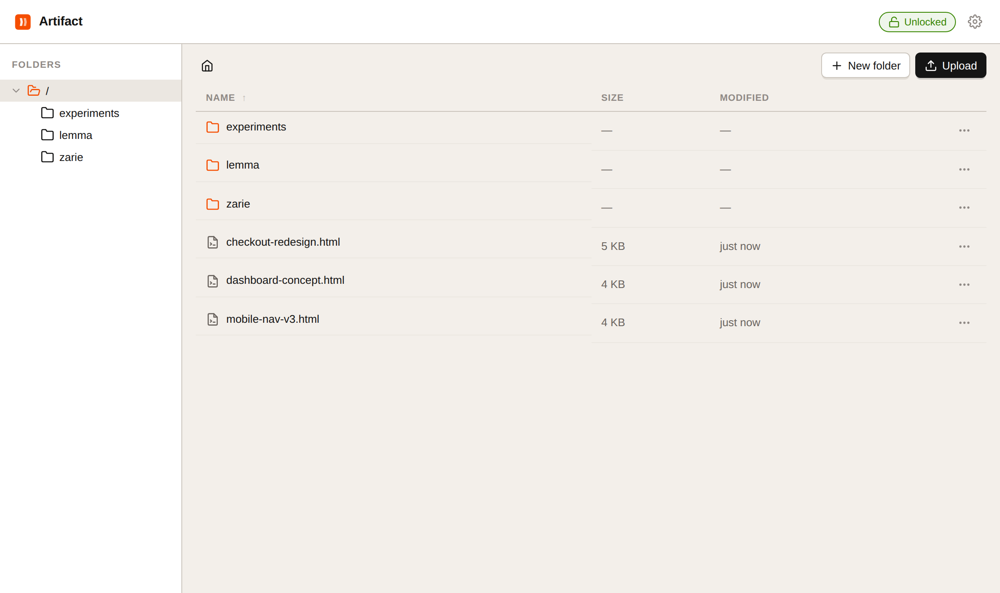

sankalp phadnis
lemma
· ai-native prd workspace
+
- ai workspace for writing product documents. the ai reads your active document and helps edit, research the web, and generate diagrams
- "wing it" takes a topic, asks clarifying questions, searches the web for research, then writes a first draft
- in beta with 8 users and 42 docs created
- next.js · convex · plate.js · vercel ai sdk
zarie
· multi-agent ai assistant
+
- ai assistant on telegram and slack that manages reminders, schedules, and tasks through natural language
- two-agent system: one handles user conversations, the other runs background jobs (scheduling, calendar sync, web search)
- built poirot, an internal tool to trace and debug agent behavior. scaled to 100 users
- fastapi · postgresql · litellm · multi-agent
run log
· pokémon-style running tracker
+

- a training log styled like a pokémon game — trainer card, levels, hp-style recovery bars, and earnable records
- runs sync automatically from whoop via webhooks, joined with recovery and sleep data for each run
- trends and records pages built on weekly summaries, hr zones, and pace/efficiency analytics
- next.js · postgresql · drizzle · whoop api
artifact
· self-hosted html prototype sharing
+

- tiny self-hosted file sharing app for html prototypes — upload, organise into folders, share a clean public link
- password or domain-restricted google sign-in for admin; public links need no auth
- built as a lightweight alternative to vercel/netlify when all you want is a stable url to send someone
- fastapi · react · typescript · docker
whoop mcp
· mcp server for whoop biometrics
+
- remote mcp server that connects claude to the whoop api — 13 read-only tools for recovery, sleep, strain, and workouts
- proper oauth 2.1 + pkce flow with dynamic client registration — click connect, log in to whoop, done
- encrypted token store survives redeploys; no biometric data is persisted, everything fetches live
- python · fastmcp · oauth 2.1 · railway
compliancegpt
· rag legal chatbot for fintech
+
- chatbot that answers questions about fintech compliance by searching through 15gb of rbi/sebi circulars
- built during my time at groww and deployed internally for the compliance team
- python · langchain · rag
mini recursive models
· trm reimplementation from scratch
+
- reimplemented the tiny recursive model paper from scratch in pytorch
- ran 60+ ablation experiments on 4x4 sudoku reasoning, reached 94.4% accuracy
- course project for cs 7643 (deep learning) at georgia tech
- pytorch · deep learning · ablation studies
cable robot optimisation
· research at tu munich
+
- research internship at the chair of product development and lightweight design, tu munich
- optimised attachment points for a cable-driven robotic arm using particle swarm optimisation
- designed a scoring algorithm to measure workspace coverage, achieving 67% coverage
- particle swarm optimisation · robotics
today
· minimalist task manager
+
- a focused task manager that shows only what matters today. published on the app store
- expo react native · typescript
hackcraft '23
· ai conversational payments prototype
+
- won best ui among 47 teams
- python